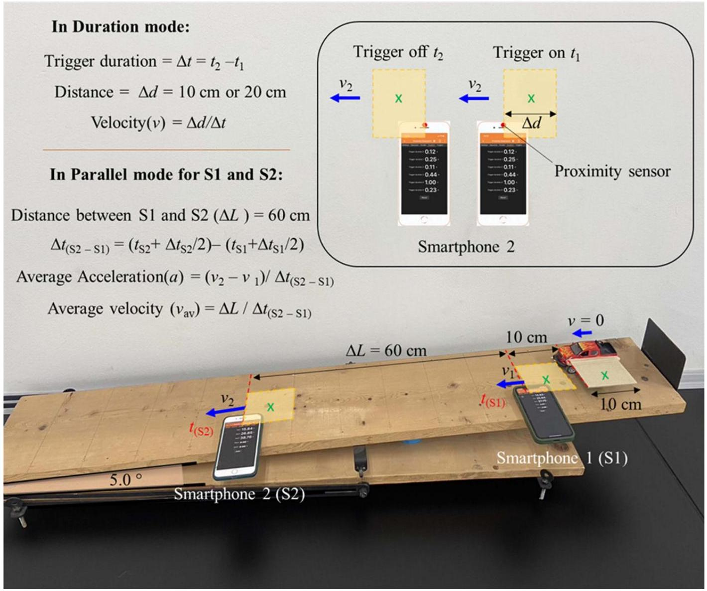
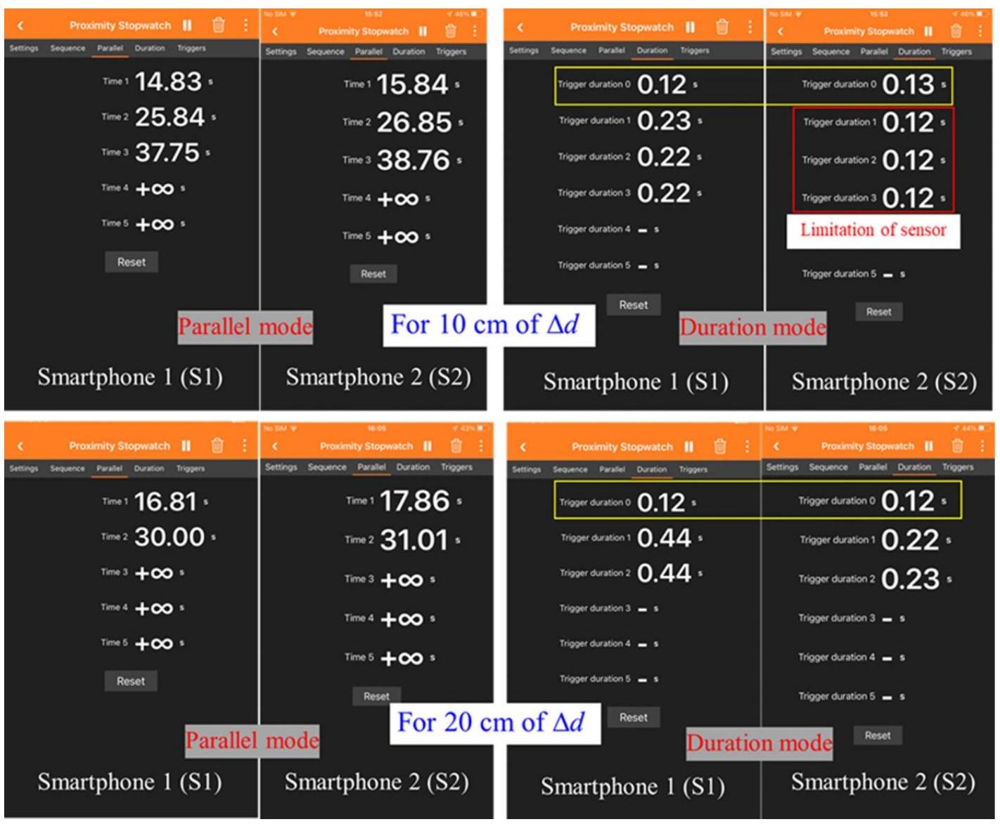

Phys. Educ. 59 033002 (2024)
2024-05-01
This paper describes an alternative method for measuring the time or time interval of a moving object in linear motion using a smartphone’s proximity sensor. Two smartphones are stationary, placed on an inclined plane, and measure the time or time interval of a moving object (with attached cardboard) passing through the sensor using the Phyphox app. The obtained data are used to calculate both velocity and acceleration for the moving object. This experiment is easy to set up with readily available objects and prevents damage to the smartphones.
Nota editorial
Este documento es una reproducción en formato Quarto del artículo original publicado en Physics Education (Khongthiamsri & Puttharugsa, 2024). Se incluye como material de referencia para el alumnado del Laboratorio de Mecánica de la UNED. El artículo original está disponible en doi:10.1088/1361-6552/ad2f62.
Cita original: Khongthiamsri, N. and Puttharugsa, C. (2024). Measuring velocity and acceleration of a moving object in linear motion using proximity sensor of smartphone. Phys. Educ. 59, 033002.
Traditionally, the measurement of the time interval of a moving object is performed using devices like photogates. Previous papers have proposed various methods to measure time intervals using smartphone sensors, such as moving objects passing through magnetic gates and LED gates (Namchanthra & Puttharugsa, 2021; Nuryantini et al., 2018). However, these methods can potentially damage smartphones. The proximity sensor of a smartphone has also been employed in physics experiments to measure time intervals for moving objects in linear motion, pendulum motion, and circular motion (Hidayat et al., 2023; Kapucu, 2022; Kapucu & Simsek, 2021).
In our previous work, we proposed an alternative method to measure time intervals in linear and circular motion using a smartphone’s magnetometer (Dumrongkitpakorn et al., 2023; Puttharugsa et al., 2023). This method required the smartphone to remain stationary on an inclined plane and measure the magnetic field of a moving object with attached magnets. However, this approach was less convenient as it required data processing to obtain the time interval from the peak position of the magnetic field.
In this paper, we introduce the use of the proximity stopwatch in the Phyphox app to measure the time or time interval of a moving object on an inclined plane for calculating velocity and acceleration.
The experiment setup, as depicted in Figure 1, is straightforward. It includes a moving object (a toy car), two smartphones (iPhone 8 Plus and iPhone 11), cardboard rectangles of 10 \times 10 cm (\pm\,0{.}5 cm) and 20 \times 10 cm (\pm\,0{.}5 cm), and an inclined plane. The toy car is affixed to the cardboard rectangles using double-sided tape. The smartphones, denoted as S1 and S2, are placed on the inclined plane at positions 10 cm and 70 cm apart from the toy car, respectively (measured from the proximity sensor of the smartphone).
The Phyphox app’s proximity stopwatch is used to record the times of the cardboard passing through the proximity sensor of the smartphones. In the settings, parameters for the trigger below and trigger above are set to 0 and 5 cm, respectively. The Phyphox app has two operating modes: duration mode and parallel mode. In duration mode, the app measures the time taken for the cardboard rectangle to pass by the sensor. In parallel mode, the app measures the time between an initial triggering event and the leading edge of the cardboard rectangle reaching the sensor.
Initially, a meter ruler is passed through both smartphones (S1 and S2) simultaneously to trigger the proximity stopwatch for recording times in parallel mode. The toy car is then released from the top of the inclined plane (10 cm apart from S1). The time duration (\Delta t = t_2 - t_1) is recorded in the duration mode of the proximity stopwatch. It triggers on (t_1) when the cardboard starts passing through the sensor and triggers off (t_2) when the cardboard has passed the sensor. In this mode, each smartphone records the time when the edge of the cardboard passes through the sensor. Thus, the velocity of the toy car (v_n) at the positions of the smartphones can be determined by the formula:
v_n = \frac{\Delta d}{\Delta t} \tag{1}
where n = 1 and 2 represent the position of smartphone 1 (S1) and smartphone 2 (S2), respectively. \Delta d is the distance of the cardboard, and \Delta t is the time duration.
The time interval (\Delta t_{\text{S2--S1}}) of the toy car (at the position of the green cross on the cardboard, see Figure 1) moving from S1 to S2 positions is measured using both parallel and duration modes. This can be determined by the equation:
\Delta t_{(\text{S2--S1})} = \left(t_{\text{S2}} + \frac{\Delta t_{\text{S2}}}{2}\right) - \left(t_{\text{S1}} + \frac{\Delta t_{\text{S1}}}{2}\right) \tag{2}
where t_{\text{S1}} and t_{\text{S2}} are the time measurements in parallel mode when the car (edge of cardboard) passed smartphones S1 and S2 (sensor position), respectively, and \Delta t_{\text{S1}} and \Delta t_{\text{S2}} are the time measurements in duration mode, respectively.
The average acceleration of the toy car (a) can be calculated using the formula:
a = \frac{v_2 - v_1}{\Delta t_{(\text{S2--S1})}} = \frac{v_2 - v_1}{\left(t_{\text{S2}} + \Delta t_{\text{S2}}/2\right) - \left(t_{\text{S1}} + \Delta t_{\text{S1}}/2\right)} \tag{3}
where v_1 and v_2 are the velocities of the toy car at positions S1 and S2, respectively.

Figure 2 shows screenshots of smartphones in the parallel and duration modes for the toy car moving through smartphones, and Table 1 shows experimental data and some calculations.
At the beginning of the experiment, smartphones (S1 and S2) were simultaneously triggered on-off using the meter ruler passing through the sensor quickly, yielding a duration time of about 0.12 s (trigger duration 0 in the duration mode, yellow rectangle in Figure 2). At this moment, the smartphones were ready to measure time in the parallel mode when the edge of the cardboard passed the sensor.
The toy car was then released down along an inclined plane. The time duration of the moving car with 10 cm of cardboard passing smartphone 2 (S2) exceeded the limitation of the proximity sensor, which was 0.12 s.
Limitation of the proximity sensor
The minimum detectable duration time of the proximity sensor is approximately 0.12 s. This limitation can be checked by passing the cardboard over the sensor quickly. If the transit time is shorter than this threshold, the sensor cannot resolve it. This sets a maximum measurable velocity:
v_{\max} = \frac{\Delta d}{\Delta t_{\min}} = \frac{\Delta d}{0{.}12\text{ s}}
For \Delta d = 10 cm: v_{\max} \approx 83 cm s^{-1}. For \Delta d = 20 cm: v_{\max} \approx 167 cm s^{-1}.
Thus, the cardboard was changed to 20 cm and the time duration at S2 was about 0.23 s and 0.22 s. The velocity v_1 and v_2 were approximately 45 cm s^{-1} and 88.9 cm s^{-1}, respectively. The time interval (\Delta t_{(\text{S2--S1})}) was about 0.94 s and 0.91 s, yielding values of average acceleration of 48.4 cm s^{-2} and 45.9 cm s^{-2}, respectively.
Moreover, the average velocity was alternatively calculated from \Delta L / \Delta t_{(\text{S2--S1})}, yielding 63.8 cm s^{-1} and 66.3 cm s^{-1}. These values are close to the calculation from (v_1 + v_2)/2, which gave 66.2 cm s^{-1} and 68.2 cm s^{-1}. The error difference was about 6.4%.
These results show that the proximity sensor with the Phyphox app can measure time at different smartphone positions to obtain velocity and acceleration of a moving object. However, the limitation of the proximity sensor (cannot measure duration time less than 0.12 s) must be taken into account. The maximum value of velocity was 100 cm s^{-1} and 200 cm s^{-1} for 10 cm and 20 cm of cardboard, respectively. Higher velocities can be measured by increasing the length of cardboard.

| \Delta d (cm) | No. | Parallel t_{\text{S1}} (s) | Parallel t_{\text{S2}} (s) | Duration \Delta t_{\text{S1}} (s) | Duration \Delta t_{\text{S2}} (s) | Time interval (s) | v_1 at S1 (cm s^{-1}) | v_2 at S2 (cm s^{-1}) | Acceleration (cm s^{-2}) |
|---|---|---|---|---|---|---|---|---|---|
| 10.0 | 1 | 14.83 | 15.84 | 0.23 | 0.12 | — | 43.5 | — | — |
| 10.0 | 2 | 25.84 | 26.85 | 0.22 | 0.12 | — | 45.5 | — | — |
| 10.0 | 3 | 37.75 | 38.76 | 0.22 | 0.12 | — | 45.5 | — | — |
| 20.0 | 1 | 16.81 | 17.86 | 0.44 | 0.22 | 0.94 | 45.5 | 90.9 | 48.3 |
| 20.0 | 2 | 30.00 | 31.01 | 0.44 | 0.23 | 0.91 | 45.5 | 87.0 | 45.6 |
Verification of average velocity
The average velocity can be cross-checked by two independent methods:
- From positions: \bar{v} = \Delta L / \Delta t_{(\text{S2--S1})}, where \Delta L = 60 cm is the distance between S1 and S2.
- From velocities: \bar{v} = (v_1 + v_2) / 2 (valid for constant acceleration).
For measurement No. 1 (\Delta d = 20 cm):
- Method 1: \bar{v} = 60 / 0{.}94 = 63{.}8 cm s^{-1}
- Method 2: \bar{v} = (45{.}5 + 90{.}9) / 2 = 68{.}2 cm s^{-1}
- Discrepancy: \sim 6{.}4\%
This level of agreement confirms the validity of the method within the sensor’s resolution limitations.
We have demonstrated an alternative method for measuring the time or time interval of a moving object on an inclined plane using the proximity sensor of smartphones. The experimental data can be used to calculate velocity and acceleration.
Students should test the limitations of time duration to determine the maximum velocity of the moving object and to prepare the appropriate length of cardboard. Additionally, using more smartphones will provide additional data for measuring the time or time interval at different positions along an inclined plane.
All data that support the findings of this study are included within the article.
Narongsak Khongthiamsri graduated with a bachelor’s degree in Physics from Srinakharinwirot University in 2019. Currently, he is a Master’s student in physics education at Srinakharinwirot University. His research interests involve the use of smartphone applications with basic physics experiments.
Chokchai Puttharugsa gained a PhD in Physics at Mahidol University (Bangkok, Thailand). He is a lecturer in physics at Srinakharinwirot University (Bangkok, Thailand). His research fields involve nanomaterial and nanotechnology. He is also interested in physics education research for applying smartphones in physics laboratory.
Received 24 October 2023, in final form 21 February 2024. Accepted for publication 1 March 2024.
https://doi.org/10.1088/1361-6552/ad2f62